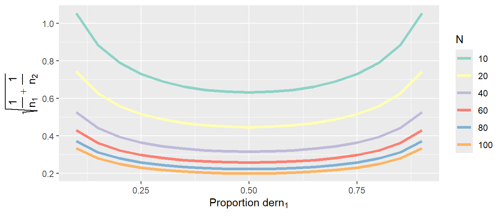

| \(n_1\) | \(n_2\) | \(\sigma^2(D)\) | \(\sigma_e(D)\) | Effizienz |
|---|---|---|---|---|
| 1 | 11 | 1.09 | 1.04 | 0.31 |
| 2 | 10 | 0.60 | 0.77 | 0.56 |
| 3 | 9 | 0.44 | 0.67 | 0.75 |
| 4 | 8 | 0.38 | 0.61 | 0.89 |
| 5 | 7 | 0.34 | 0.59 | 0.97 |
| 6 | 6 | 0.33 | 0.58 | 1.00 |
| 7 | 5 | 0.34 | 0.59 | 0.97 |
| 8 | 4 | 0.38 | 0.61 | 0.89 |
| 9 | 3 | 0.44 | 0.67 | 0.75 |
| 10 | 2 | 0.60 | 0.77 | 0.56 |
| 11 | 1 | 1.09 | 1.04 | 0.31 |
21 Einführung
Im Folgenden beschäftigen wir uns mit experimentellen Design. D.h. wir untersuchen wie wir ein Experiment aus statistischer Sicht erstellen sollten um die Wahrscheinlichkeit einen bestimmten Effekt zu beobachten möglichst Effizient zu erhöhen. Eine zentrale Größe wird dabei immer wieder der Standardfehler \(\sigma_e\) der jeweiligen Statistik spielen die wählen um einen bestimmten Effekt zu untersuchen. Daher fangen wir erst einmal mit einem einfachen Beispiel an.
21.1 Zuteilung der Stichprobengrößen in zwei Gruppen
Die folgenden Beispiele sind alle aus Goos und Jones (2011) entnommen. Wir möchten Mittelwertsunterschied zwischen zwei Gruppen, Gruppe \(1\) und Gruppe \(2\), untersuchen. In Gruppe \(1\) haben wir eine Stichprobengröße von \(n_1\) und entsprechend eine Stichprobegröße \(n_2\) in Gruppe \(2\).
Um den Unterschied zwischen den beiden Gruppenmittelwerten zu berechnen, verwenden wir den unspektakulär:
\[\begin{equation} D = \bar{X}_1 - \bar{X}_2 \end{equation}\]
Der Unterschied \(D\) für sich ist noch relativ wenig informativ, da er mit den Einheiten und vor allem vor dem Hintergrund der Streuung der Werte zu betrachten ist. D.h. wir benötigen auch ein Maß um die Unsicherheit \(\widehat{=}\) Streuung um einen gegebenen Unterschied zu bewerten. Den Standardfehler können wir mit den uns bekannten Rechenregeln für die Varianz relativ einfach herleiten und erhalten:
\[\begin{equation} \sigma^2(D) = \frac{\sigma_1^2}{n_1} + \frac{\sigma_2^2}{n_2} \end{equation}\]
Um die Wahrscheinlichkeit zu erhöhen einen relevanten Unterschied \(D\) zwischen den Gruppen zu finden wählen wir nun ein Design des Experiments, dass die Varianz \(\sigma^2(D)\) bzw. den Standardfehler \(\sigma_e(D)\) von \(D\) möglichst klein werden lässt. Denn, umso kleiner der Standardfehler umso geringer sind die Streuungen der Stichprobenverteilung und umso geringer unsere Unsicherheit.
Schauen wir uns an, was dies in einem konkreten Fall bedeutet. Gehen wir, der Übersichtlichkeit halber, von einer Gesamtstichprobengröße \(N = 12\) aus mit Standardabweichungen in beiden Population von \(\sigma^2_1 = \sigma^2_2 = \sigma^2 = 1\). D.h. wir nehmen an, dass in beiden Stichproben die gleiche Streuung vorliegt.
In Tabelle 21.1 sind die Varianz \(\sigma^2(D)\) und der Standardfehler \(\sigma_e(D)\) gegen die Stichprobenverteilung abgetragen. Wir können sehen, dass bei gleicher Stichprobenanzahl in beiden Gruppen die Varianz und somit auch der Standardfehler den kleinsten Wert annehmen. In der fünften Spalte von Tabelle 21.1 ist ein Wert Effizient eingetragen. Dieser Wert berechnet sich aus dem Verhältnis der kleinstmöglichen Varianz zur jeweiligen Varianz. Wir können an diesem Wert abschätzen, das ein Design bei dem in einer der Gruppen nur eine einzige Person ist, die Effizienz nur noch ein Drittel dessen ist, was bei einer gleichmäßigen Stichprobenverteilung zu errreichen ist. D.h. so weit ist die übliche Herangehensweise, beide Gruppen möglichst gleichgroß zu gestalten vollkommmen sinnvoll.
Schauen wir uns als Nächstes an, wie das aussieht wenn die Stichprobengröße \(N\) anwächst. In Abbildung 21.1 ist der Standardfehler \(\sigma_e(D)\) gegen verschiedene Zuteilungen der Stichproben in die beiden Gruppen für verschiedene Stichprobengrößen abgebildet.

In Abbildung 21.1 ist zu sehen, das das bei gleichen Varianzen die gleichmäßige Verteilung der Stichprobe in die beiden Gruppen immer diejenige mit dem kleinsten Standardfehler ist. Der Standardfehler nimmt natürlich mit der Größe der Stichprobe ab. Allerdings nimmt auch die Größe der Verschlechterung bei ungleicher Verteilung mit der Größe der Stichprobe ab. Daher, wenn wir eine große Stichprobe haben, dann ist die gleichmäßige Verteilung der Stichproben weniger wichtig als bei kleinen Stichprobengrößen.
Schauen wir uns daher als nächsten Fall an, was passiert wenn die Varianzen in den beiden Gruppen nicht mehr gleich sind. Sei zum Beispiel \(\sigma^2 = 1\) und \(\sigma^2 = 9\). Also ein recht extremer Unterschied zwischen den beiden Gruppen.
| \(n_1\) | \(n_2\) | \(\sigma^2(D)\) | \(\sigma_e(D)\) | Effizienz |
|---|---|---|---|---|
| 1 | 11 | 1.82 | 1.35 | 0.73 |
| 2 | 10 | 1.40 | 1.18 | 0.95 |
| 3 | 9 | 1.33 | 1.15 | 1.00 |
| 4 | 8 | 1.38 | 1.17 | 0.97 |
| 5 | 7 | 1.49 | 1.22 | 0.90 |
| 6 | 6 | 1.67 | 1.29 | 0.80 |
| 7 | 5 | 1.94 | 1.39 | 0.69 |
| 8 | 4 | 2.38 | 1.54 | 0.56 |
| 9 | 3 | 3.11 | 1.76 | 0.43 |
| 10 | 2 | 4.60 | 2.14 | 0.29 |
| 11 | 1 | 9.09 | 3.02 | 0.15 |
In Tabelle 21.2 sind wieder die verschiedenen Werte für \(\sigma^2(D)\), \(\sigma_e(D)\) und die Effizienz berechnet worden. Wir können sehen, dass jetzt nicht mehr das Design mit gleich großen Stichproben optimal ist, sondern das Design mit \(n_1 = 3\) und \(n_2 = 9\). Die ungleiche Varianz in den beiden Gruppen hat dazu geführt, dass der minimale Standardfehler dann eingenommen wird, wenn wir eine größere Stichprobe aus Gruppe \(2\) als aus Gruppe \(1\) ziehen.
Wenn wir diese nicht gewusst hätten und in beiden Gruppen wieder mit \(n_i = 6\) gearbeitet hätten, hätten wir somit \(20\%\) Effizienz eingebüßt. Intuitiv macht diese ungleiche Verteilung auch Sinn. Da die Varianz in Gruppe \(2\) größer ist, ist auch unserer Unsicherheit über den Mittelwert in dieser Gruppe größer. Um diese Unsicherheit auszugleichen erhöhen wir die Stichprobenanzahl im Verhältnis zu Gruppe \(1\) um mehr Information über diese Gruppe zu erhalten.
Schauen wir uns ein Beispiel an, bei dem der Unterschied der Varianzen in den beiden Gruppen nicht ganz so extrem ist (siehe Tabelle 21.3).
| \(n_1\) | \(n_2\) | \(\sigma^2(D)\) | \(\sigma_e(D)\) | Effizienz |
|---|---|---|---|---|
| 1 | 11 | 1.18 | 1.09 | 0.41 |
| 2 | 10 | 0.70 | 0.84 | 0.69 |
| 3 | 9 | 0.56 | 0.75 | 0.87 |
| 4 | 8 | 0.50 | 0.71 | 0.97 |
| 5 | 7 | 0.49 | 0.70 | 1.00 |
| 6 | 6 | 0.50 | 0.71 | 0.97 |
| 7 | 5 | 0.54 | 0.74 | 0.89 |
| 8 | 4 | 0.62 | 0.79 | 0.78 |
| 9 | 3 | 0.78 | 0.88 | 0.62 |
| 10 | 2 | 1.10 | 1.05 | 0.44 |
| 11 | 1 | 2.09 | 1.45 | 0.23 |
In Tabelle 21.3 sehen wir wieder, das das effizienteste Design nicht gleich große Stichproben in den beiden Gruppen hat, sondern hier würde das Design mit \(n_1 = 5\) und \(n_2 = 7\) den niedrigsten Standardfehler zeigen. Der Verlust an Effizienz bei gleich großen Gruppen wäre hier praktisch zu vernachlässigen. D.h. wenn wir keine genauen Information haben wie sich die Varianzen in den beiden Gruppen verhalten, aber wir keine großen Unterschiede erwarten, dann sind wir mit gleichgroßen Gruppen wahrscheinlich oft gut bedient.
Untersuchen wir die Effizienz noch einmal aus einer anderen Perspektive, nämlich des Budget das uns zur Verfügung steht. Nehmen wir an wir müssen die Untersuchung in einem Speziallabor durchführen und wir haben nur eine begrenzte Zeit zur Verfügung. Wir untersuchen wieder zwei Gruppen bei denen aber die Vorbereitung des Experiment doppelt solange für Gruppe \(2\) dauert im Vergleich zu Gruppe \(1\). Zum Beispiel in Gruppe \(1\) benötigen wir das Labor für eine Stunde während wir für Teilnehmerinnen und Teilnehmer aus Gruppe \(2\) zwei Stunden benötigen. In Gruppe \(2\) ist vielleicht eine spezielle Patientenpopulation bei der wir mehr Zeit einplanen müssen. Wir haben aber nur insgesamt \(24\) Stunden das Labor zu Verfügung. Wir setzen wieder \(\sigma^2 = 1\) an. Wie sollten wir die Gruppengrößen zuteilen?
Wir können jetzt nicht einfach die gleiche Tabelle wie in den obigen Fällen benutzen, da wir unser Zeitbudget beachten müssen. Mit etwas ausprobieren kommen wir zu folgendem Ergebnis.
| \(n_1\) | \(n_2\) | Kosten | \(\sigma^2(D)\) | \(\sigma_e(D)\) | Effizienz |
|---|---|---|---|---|---|
| 22 | 1 | 24 | 1.05 | 1.02 | 0.23 |
| 20 | 2 | 24 | 0.55 | 0.74 | 0.44 |
| 18 | 3 | 24 | 0.39 | 0.62 | 0.62 |
| 16 | 4 | 24 | 0.31 | 0.56 | 0.78 |
| 14 | 5 | 24 | 0.27 | 0.52 | 0.89 |
| 12 | 6 | 24 | 0.25 | 0.50 | 0.97 |
| 10 | 7 | 24 | 0.24 | 0.49 | 1.00 |
| 8 | 8 | 24 | 0.25 | 0.50 | 0.97 |
| 6 | 9 | 24 | 0.28 | 0.53 | 0.87 |
| 4 | 10 | 24 | 0.35 | 0.59 | 0.69 |
| 2 | 11 | 24 | 0.59 | 0.77 | 0.41 |
Wir sehen wieder in Tabelle 21.4, dass eine ungleiche Verteilung in die Gruppen die höchste Effizienz hat. Der Effekt hier, ist dass wir hier eine Balance finden müssen zwischen der größten Anzahl an Teilnehmerinnen und Teilnehmer und der Ungleichheit der Stichprobengrößen.
Zusammenfassend lässt sich sagen, dass bei Vergleichen zwischen zwei Gruppen das Design mit gleich großen Stichproben in beiden Gruppen oft die Beste Wahl ist. In Abhängigkeit davon wie sich die Varianzen zwischen den Gruppen verhalten und oder auch welche Randbedingungen für die Durchführung des Experiment bestehen, kann ein optimales Design jedoch auch sehr unterschiedlich ausfallen. Daher macht es Sinn für den jeweiligen speziellen Fall sich Gedanken zu machen welches Design den bestmöglichen Output liefert und vielleicht nicht einfach nur ein Standarddesign aus der Schublade zu nehmen. Die Problematik eine informierte Entscheidung diesbezüglich zu treffen wird in den folgenden Kapitel immer wieder aufgegriffen.
21.2 Terminologie
Zunächst müssen einmal vier Grundbegriffe des experimentellen Designs definiert werden. Diese sind, die Experimentelle Einheit (engl. Experimental unit), die Beobachtungseinheit (engl. observational unit), der Replikationsfaktor (engl. replication) und der Wiederholungsfaktor (engl. repetition bzw. auch Pseudoreplication).
Definition 21.1 (Experimentelle Einheit (EU)) Die experimentelle Einheit bezeichnet das kleinste Objekt, dem eine bestimmte Intervention (engl. treatment) bzw. experimentelle Kondition zugewiesen wird. Die Zuweisung muss zufällig (randomisiert) stattfinden. Daher werden im englischen experimentelle Einheiten auch als unit of randomisation. Die Intervention bzw. die Kondition muss unabhängig von anderen experimentellen Einheiten ausgeführt werden. D.h. die EUs dürfen sich nicht gegenseitig beeinflussen können. Die Gesamtzahl der experimentellen Einheiten bestimmt die Stichprobengröße des Experiments.
Die Anforderung von zufällig und unabhängig können sich dabei gegen seitig überschreiben . Werden z.B. acht Personen zufällig auf zwei Konditionen verteilt und die jeweils vier Personen führen die Konditionen jeweils gemeinsam in einer Gruppe aus, dann wird das Treatment nicht mehr unabhängig verabreicht. Das führt dann dazu, dass die beiden Gruppen jeweils zu einer EU zusammengefasst werden müssen. D.h. die Stichprobengröße ist nicht \(N = 8\) sondern \(N = 2\).
Definition 21.2 (Beobachtungseinheit (OU)) Die Beobachtungseinheit ist das Objekt, an der eine Messung vorgenommen wird. Die Beobachtungseinheit kann gleich der experimentellen Einheit sein, kann isch aber auch von dieser unterscheiden.
Führen wir zum Beispiel ein fünftägiges Experiment mit \(10\) Teilnehmerinnen durch. Wenn wir nur eine Messung auf jeder Person am Ende des Experiments durchführen. Dann erhalten wir insgesamt \(12\) Beobachtungseinheiten und die Beobachtungseinheiten sind gleich den experimentellen Einheiten. Messen wir dagegen jede Person an jedem Tag mehrmals, z.b. \(5\)-mal, dann erhalten wir \(5 \times 12 = 60\) Beobachtungseinheiten. In diesem Fall sind die experimentellen Einheiten und die Beobachtungseinheiten nicht mehr identisch.
Definition 21.3 (Replikation) Eine Replikation ist die Wiederholung der Versuchssituation durch Replikation der experimentellen Einheit. Replikations sind daher zwei oder mehr Versuche, die bei denselben Bedingungen der experimentellen Kondition bzw. unabhängigen Variablen mit unterschiedlichen experimentellen Einheiten durchgeführt werden.
Beispielsweise wenn wir \(N = 9\) experimentelle Einheiten zufällig und unabhängig auf \(k = 3\) Konditionen zuweisen. Dann wir jede Kondition dreimal mit unterschiedlichen experimentellen Einheiten repliziert. Der Wert der gemessene abhängigen Variable unterscheidet sich zwischen den Replikationen aufgrund von Änderungen, Störvariablen und inhärenten Unterschieden in den Versuchseinheiten. Daher liefert uns die Replikation Informationen über die Restvarianz innerhalb der Konditionen. Der Begriff Replikation ist hierbei nicht zu verwechseln mit Replikation eines Befunds in Bezug auf ein Experiment (Replication crisis). Damit wird ein fundamental anderer Prozess leider mit der gleichen Begrifflichkeit bezeichnet.
Definition 21.4 (Wiederholung/Pseudoreplikation) Wenn die experimentelle Einheit nach der Applikation des Treatments bzw. der Kondition in mehrere Einheiten aufgeteilt wird, spricht man von einer Untereinheit. Dies könnten z.B. mehrer Messungen an einer Versuchsperson sein. Die Messungen an Untereinheiten derselben experimentellen Einheit sind in der Regel korreliert und daher nicht unabhängig voneinander.
21.2.1 Beispiele
In Tabelle 21.5 ist ein Beispiel für ein einfaches experimentelles Design dargestellt. Es wurden insgesamt \(9\) TeilnehmerInnen zufällig auf \(3\) Konditionen \(A_1, A_2, A_3\) verteilt. Auf jeder Person wurde eine Messung unter der entsprechenden Kondition durchgeführt. Jede Person ist einzeln untersucht worden.
| Teilnehmer | \(A_1\) | \(A_2\) | \(A_3\) |
|---|---|---|---|
| P1 | X | ||
| P2 | X | ||
| P3 | X | ||
| P4 | X | ||
| P5 | X | ||
| P6 | X | ||
| P7 | X | ||
| P8 | X | ||
| P9 | X |
Was sind in diesem Fall die EU und OUs und was ist der Replikationsfaktor und der Wiederholungsfaktor? Die Personen sind randomisiert den verschiedenen Konditionen zugewiesen worden und das treatment erfolgt unabhängig von allen anderen Personen. Daher sind die Personen die EUs und somit \(N = 9\). Da auf jeder Person nur eine Messung erfolgt, haben wir auch insgesamt \(9\) OUs. D.h. die experimentellen Einheiten und die Beobachtungseinheiten sind in diesem Design identisch. Jede Kondition wurde dreimal durch unabhängige EUs repliziert, daher ist der Replikationsfaktor \(3\). Wir haben keine Wiederholungen auf den EUs, dadurch haben wir keine Pseudoreplikation. Dadurch das drei Replikationen für jede Kondition vorhanden sind, kann die Residualvarianz von der Treatmentvarianz unterschieden werden.
In Tabelle 21.6 haben wir ein ähnliches Design. Im Unterschied zu Tabelle 21.5 sind auf jeder Person nun zwei Messungen durchgeführt worden.
| Teilnehmer | \(A_1\) | \(A_2\) | \(A_3\) |
|---|---|---|---|
| P1 | X X | ||
| P2 | X X | ||
| P3 | X X | ||
| P4 | X X | ||
| P5 | X X | ||
| P6 | X X | ||
| P7 | X X | ||
| P8 | X X | ||
| P9 | X X |
Dadurch sind immer noch die \(EU = 9\) und der Replikationsfaktor \(=2\). Die Beobachtungseinheiten sind jetzt verdoppelt \(OU = 18\) und wir erhalten einen Pseudoreplikationsfaktor von \(2\). Dadurch, dass auf jeder EU zwei Messungen durchgeführt wurden, können wir die Präzision der Gesamtmessungen auf den einzelenen EUs erhöhen. Dadurch wird sich die Varianz die auf die Messmethode zurück zu führen ist reduzieren und wir sind in der Lage kleinere Unterschiede zwischen den Treatments zu identifizieren.
Im nächsten Design wird es nun etwas komplizierter. Wir untersuchen drei verschiedene Treatments \(A_1, A_2\) und \(A_3\) mit insgesamt neun Studienteilnehmern. Die Teilnehmer wurden aus drei verschiedenen Vereinen akquiriert. Als Randbedingung können wir die Treatments immer nur einheitlich pro Verein anwenden. D.h. alle Teilnehmer aus einem Verein erhalten das gleiche Treatment. Die Zuordnung der Treatments auf die Vereine erfolgt jedoch randomisiert. Es ergibt sich die folgende Designstruktur Tabelle 21.7.
| Teilnehmer | \(A_1\) | \(A_2\) | \(A_3\) | |
|---|---|---|---|---|
| Verein I | P1 | X | ||
| P2 | X | |||
| P3 | X | |||
| Verein II | P4 | X | ||
| P5 | X | |||
| P6 | X | |||
| Verein III | P7 | X | ||
| P8 | X | |||
| P9 | X |
In diesem Fall erfolgt die Zuweisung der Treatments also nicht auf dem Level der Teilnehmer, sondern auf dem Level der drei Vereine. Dies führt nun dazu, da die experimentellen Einheiten laut der Definition die Treatment randomisiert zugewiesen bekommen müssen, dazu, dass die Vereine zu den experimentellen Einheiten werden, nicht die einzelnen Teilnehmer. Folgerichtig ist \(N\) is diesem Fall \(N = 3\) und nicht \(N = 9\) wie in den beiden vorhergehenden Fällen. Dies führt weiterhin dazu, dass wir keine Replikation der experimentellen Einheiten vorliegen haben, da jede Kondition nur einmal unter eine experimentellen Einheit beobachtet wurde. Daraus folgt, dass es nicht möglich ist die Ergebnisse über die Studiengruppe hinaus zu generalisieren, da keine ausreichend große Stichprobe gezogen wurde. Zusätzlich und noch wichtiger, wir haben nur eine einzelne experimentelle Einheit beobachtet und können keine Aussagen über die Varianz zwischen experimentellen Einheiten aussagen. Die Unterschiede zwischen den Kondition können nicht von der Residualvarianz getrennt werden. Die drei Teilnehmer innerhalb der jeweiligen Vereine werden als Pseudoreplikationen mit einem Faktor von \(3\) interpretiert. Da wir insgesamt neun Messungen beobachten erhalten wir neun Beobachtungseinheiten.
Um aus den Teilnehmern tatsächlich auch neun experimentelle Einheiten zu machen, müssen wir die Treatments unabhängig von den Vereinen randomisieren. Zusätzlich müssen wir auch noch sicherstellen, das das Treatment in isolation durchgeführt wird, da, wieder der Definition folgend, das Treatment unabhängig von den anderen experimentellen Einheiten durchgeführt werden muss. D.h. wir können auch keine Gruppen bilden die beispielsweise gemeinsam trainieren, da es dadurch auch wieder zu ungewollten Interaktionseffekten zwischen den experimentellen Einheiten kommen kann, die die Unabhängigkeit der experimentellen Einheiten voneinander zerstört. Dies führt dann wieder dazu, dass jede Gruppe zu einer einzelnen experimentellen Einheit zusammengefasst wird mit der entsprechenden Reduktion in der Stichprobengröße. Die Nichtbeachtung von Abhängigkeiten zwischen experimentellen Einheiten führt in der Analyse zu fehlerhaften Ergebnisse die insbesondere zu einer Vergrößerung des Type-I Fehler führen. D.h. Ergebnisse werden zu oft als statistisch signifikant deklariert (Hurlbert (1984), Lazic, Clarke-Williams, und Munafò (2018), Silverman (2004)).
In Tabelle 21.8 ist ein sogenanntes Repeated measures design. Hier wurden sechs Personen auf zwei Konditionen (CON und TRT) aufgeteilt.
| ID | Condition | PRE | POST | RETENTION |
|---|---|---|---|---|
| P1 | CON | X | X | x |
| P2 | CON | X | X | X |
| P3 | TRT | X | X | X |
| P4 | TRT | X | X | X |
| P5 | CON | X | X | X |
| P6 | TRT | X | X | X |
In diesem Fall ist die Anzahl der EU gleich sechs mit einem Replikationsfaktor drei. Die Beobachtungseinheiten sind die einzelnen Messungen wobei hier keine Pseudoreplikation vorkommen, da die Messungen zu unterschiedlichen Zeitpunkten gewollt sind.
21.3 Implikationen
Die Anzahl der Replikationen der EU bestimmt die Präzision des experimentellen Fehlers \(\sigma^2\) in der jeweiligen Untersuchung. Nehmen wir zum Beispiel zwei EUs welche das gleiche Treatment zugewiesen bekommen haben, z.B. zwei Athletinnen. Wenn wir nun eine Messung durchführen, z.B. die Sprungleistung, dann wird sich die Sprungleistung zwischen den beiden Athletinnen üblicherweise unterschieden einfach schon auf Grund der Inter-individuellen Unterschiede zwischen Personen. Wir vernachlässigen zunächst, das bei biologischen System selbst schon bei Wiederholung der gleichen Messung zum Teil bedeutsame Unterschiede auftreten werden. Die Unterschiede zwischen den Messungen der beiden Athletinnen spiegeln unseren experimentellen Fehler wieder. Im Sinne des generellen linearen Modells ist dies unser altbekannter Residualfehler \(\epsilon_i\). Umso mehr Replikationen wir haben, umso präziser werden wir diesen experimentellen Fehler bestimmen können. D.h. mit Hilfe der Replikation versuchen wir die Präzision \(\widehat{=}\) unsere Unsicherheit in Bezug auf den Residualfehler zu verkleinern.
Die Anzahl der Wiederholungen zielt im Gegensatz zur Replikationen dagegen ab, die Streuung innerhalb der EUs zu minimieren. Zum Beispiel wenn wir unsere Athletinnen nicht nur einmal sondern mit entsprechenden Pausen mehrmals springen lassen. Dadurch wir unsere Abschätzung der Sprungleistung der Athletinnen besser.
Versuchen wir diese beiden Beiträge etwas zu formalisieren. Seien drei verschiedene Varianzkomponenten gegeben. 1) die Varianz zwischen den Athletinnen \(\sigma_{\text{Person}}^2\), 2) die Varianz innerhalb der jeweiligen Athleting \(\sigma_{\text{innerhalb}}^2\) und dann noch eine Residualstreuung die auf zufällige Einflüsse zurück zu führen ist \(\sigma_{\epsilon}^2\). Die Gesamtvarianz \(\sigma_{\text{total}}^2\) die wir nun in den Messungen der Sprunghöhen beobachten kann dann als die Summe dieser drei Komponenten interpretiert werden (Wir gehen davon aus, dass sich die Komponenten untereinander nicht beeinflussen also unabhängig voneinander sind).
\[\begin{equation} \sigma_{\text{total}}^2 = \sigma_{\text{Person}}^2 + \sigma_{\text{innerhalb}}^2 + \sigma_{\epsilon}^2 \end{equation}\]
Diese Gleichung beschreibt die Varianzkomponenten innerhalb einer Treatmentstufe. Wenn wir nun EUs aus unterschiedlichen Treatmentstufen \(\tau_i\) zusammenstecken, dann wird die Gleichung entsprechend um diese zusätzliche Varianzkomponente \(\sigma_{\tau}^2\) erweitert.
\[\begin{equation} \sigma_{\text{total}}^2 = \sigma_{\tau}^2 + \sigma_{\text{Person}}^2 + \sigma_{\text{innerhalb}}^2 + \sigma_{\epsilon}^2 \end{equation}\]
Die Idee des experimentellen Designs ist es nun, ein Design zu finden, das es ermöglicht diese Komponenten durch eine intelligente Verteilung der Faktorstufen, Replikationen und Wiederholungen möglichst präzise zu bestimmen.
Möchte ich zum Beispiel den Einfluss des Treatment \(\tau_i\) bestimmen, dann Vergleiche ich die durch das Treatment entstehende Varianz \(\sigma_{\tau}^2\) mit dem experimentellen Fehler \(\sigma_{\epsilon}^2\) um zu entscheiden ob die Unterschiede zwischen den Faktorstufen auch wirklich bedeutsam sind. In Pseudoschreibweise:
\[\begin{equation*} \frac{\sigma_{\tau}^2}{\sigma_{\epsilon}^2} \end{equation*}\]
Wähle ich nun aber ein Design bei dem ich die Varianz innerhalb der Athletinnen \(\sigma_{\text{innerhalb}}^2\) nicht isoliert bestimmen kann, dann geht \(\sigma_{\text{innerhalb}}^2\) in \(\sigma_{\epsilon}^2\) auf. Im englischen wird dies als confounded bezeichnet. Ich kann die beiden Varianzkomponenten nicht voneinander trennen. Dadurch wird dann der Vergleich von \(\sigma_{\tau}^2\) mit \(\sigma_{\epsilon}^2\) entsprechend schlechter ausfallen.
\[\begin{equation*} \frac{\sigma_{\tau}^2}{\sigma_{\epsilon^*}^2} = \frac{\sigma_{\tau}^2}{\sigma_{\epsilon}^2 + \sigma_{\text{innerhalb}}^2} \end{equation*}\]
Insgesamt sehen wir, dass der Begriff der Stichprobe eigentlich etwas irreführend ist. Im Allgemeinen identifzieren wir mit der Stichprobe \(N_s\) die Anzahl der Personen die wir untersuchen. Wie wir aber durch die Unterscheidung in EU, OU, Replikation und Wiederholung sehen, kann die tatsächlich Stichprobe \(N\) je nach Durchführung des Experiment aber deutlich von \(N_s\) unterschiedlich sein. Wie z.B. in dem Beispiel mit den Vereinen passiert (siehe Tabelle 21.7).
Im folgenden sehen wir eine Übersicht über verschiedene Standarddesigns.
21.4 Übersicht über verschiedene Designs
Das einfachste Design ist ein completely randomized design oder kurz CRD. Wir haben eine unabhängige, nominale Variable \(A\) die verschiedene Faktorstufen (auch Levels) hat. Die EUs werden randomisiert auf die Faktorstufen verteilt und es wird nur eine Messung und somit eine Beobachtungseinheit bestimmt. In diesem Fall können wir auch nur eine Varianzkomponente \(\sigma_{\tau}^2\) bestimmen. In Tabelle 21.9 ist ein Beispiel mit drei Faktorstufen für \(A\) und zwei Replikationen abgebildet.
| EU | \(A_1\) | \(A_2\) | \(A_3\) |
|---|---|---|---|
| 1 | X | ||
| 2 | X | ||
| 3 | X | ||
| 4 | X | ||
| 5 | X | ||
| 6 | X |
Wenn wir nicht mehr nur eine unabhängige Variablen mit verschiedenen Faktorstufen haben, sondern mehrere dann sprechen wir von einen completely randomized factorial design (CRFD). In diesem Fall kommen noch weitere Varianzkomponenten für die jeweiligen unabhängigen Variablen hinzu, sowie mögliche Interaktioneffekte wie wir sie schon abhand der Interaktionen in der multiplen Regression kennengelernt haben. In Tabelle 21.10 ist eine einfacher Fall mit zwei unabhängigen Variablen \(A\) und \(B\) mit jeweils zwei Stufen dargestellt. Damit die Tabelle nicht zu groß wird, ist nur eine Replikation dargestellt.
| \(A_1\) | \(A_2\) | |||
|---|---|---|---|---|
| EU | \(B_1\) | \(B_2\) | \(B_1\) | \(B_2\) |
| 1 | X | |||
| 2 | X | |||
| 3 | X | |||
| 4 | X | |||
Eine weitere Variante ist das sogenannte Completely Randomized Block Design (CRBD). Hier lassen sich die EU in Blöcke gruppieren die ähnlich zueinander sind. In Tabelle 21.11 ist eine einfache Struktur mit vier Blöcken I, II, III und IV abgebildet. Dies könnten zum Beispiel Athleten die in Blöcken von drei aus dem gleichen Verein (Block) kommen. Die Annahme dahinter ist, dass die Vereine dazu führen, dass sich die Athleten aus dem gleichen Verein stärker ähneln als Athleten aus verschiedenen Vereinen. Ein Faktor A hat dabei drei Ausprägungen (A1, A2 und A3) und alle Stufen sind in allen Blöcken enthalten. Die EUs innerhalb eines Blocks werden dabei randomisiert auf die drei Stufen von A verteilt. Daher kommt das randomized.
| Block | \(A_1\) | \(A_2\) | \(A_3\) |
|---|---|---|---|
| I | X | X | X |
| II | X | X | X |
| III | X | X | X |
| IV | X | X | X |
Eine Variante des CRBD ist das Incomplete Block Design (siehe Tabelle 21.12). Hier sind nicht alle Faktorstufen von A in jedem Block vorhanden sondern nur bestimmte Kombinationen die jedoch über die Gesamtzahl balanciert werden.
| Block | \(A_1\) | \(A_2\) | \(A_3\) |
|---|---|---|---|
| I | X | X | |
| II | X | X | |
| III | X | X | |
| IV | X | X | |
| V | X | X | |
| VI | X | X |
Als letztes Design dann noch das Split-Plot Design (SPD). Bei SPD werden ebenfalls zwei Faktoren betrachtet. Die Besonderheit ist hier allerdings, dass die Zuteilung der Faktorstufen bzw. deren Kombination unterschiedlich schwer sind. Im Beispiel lässt sich der Faktor B einfacher zuteilen, während Faktor A schwerer zuzuteilen ist.
| \(A_1\) | \(A_2\) | |||||
|---|---|---|---|---|---|---|
| EU | \(B_1\) | \(B_2\) | \(B_3\) | \(B_1\) | \(B_2\) | \(B_3\) |
| 1 | X | X | X | |||
| 2 | X | X | X | |||
| 3 | X | X | X | |||
| 4 | X | X | X | |||
Ein Beispiel für ein SPD ist eine Treatment-Control Studie. Hier wäre beispielsweise \(A_1\) = Control, \(A_2\) = Treatment und \(B_1\) = pre, \(B_2\) = post und \(B_3\) = retention.
Die verschiedenen Design haben jeweils Stärken und Schwächen wenn es darum geht unterschiedliche Varianzkomponenten zu isolieren die es dann möglich machen für ein gegebenes Problem ein effizientes Design auszuwählen bzw. anzupassen.